힘든데
이상하게
조용해지는 느낌.
자전거별 · LPH-B613-04 · HAM MEDIA 별자리
자전거별
몸을 비우는 별.
두 발로 가는 건 딴생각하면 큰일 난다.
머리가 복잡한 날엔 다리를 믿고 그냥 전진했다.
그렇게 몸을 비우는 법이, 지금도 나를 재운다.
비워야 채워진다는 걸 아는 사람이라면.
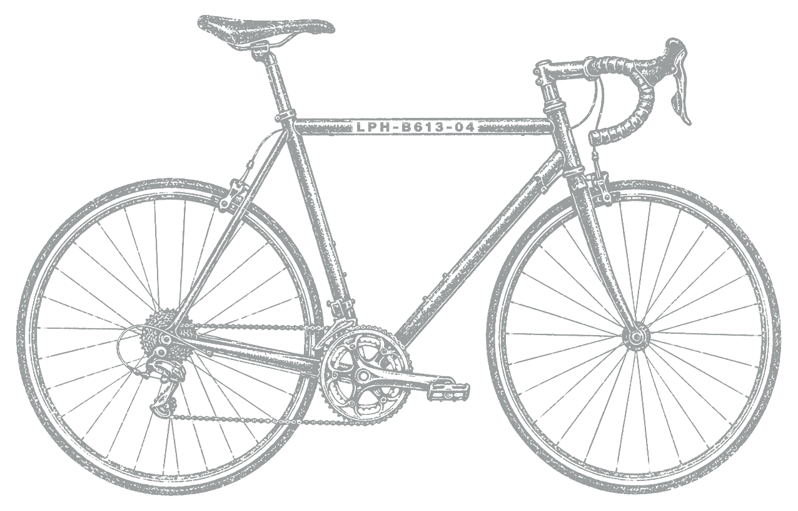
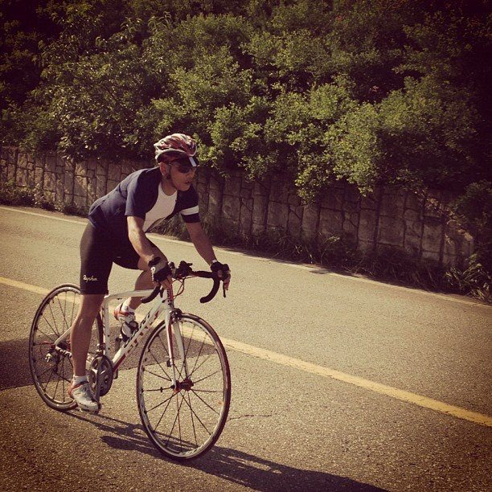
01 / 비움
생각보다 먼저,
몸이 앞으로 갔다.
밟은 만큼 가고,
멈추면 멈춘다.
자전거는 정직했다. 그래서 머리가 복잡한 날에는 말보다 페달이 먼저였다.
막히면 일단
한 컷, 한 문장.
콘텐츠도 그렇다. 생각이 복잡할 때 결국 한 컷을 찍고 한 문장을 쓰면서 앞으로 간다.
02 / 문장
다리를 믿는 시간.
기록보다 통과.
문장으로
부평에서 부천은 껌이지. 하하.
출발 전에는 늘 가볍게 말할 수 있다. 하지만 길 위에 올라서면 농담보다 호흡이 먼저 오고, 몸은 내가 어디까지 갈 수 있는지 조용히 확인한다.
패배는 단지 일시적인 것에 불과하지만, 포기해버리면 그걸로 모든 건 끝이다.
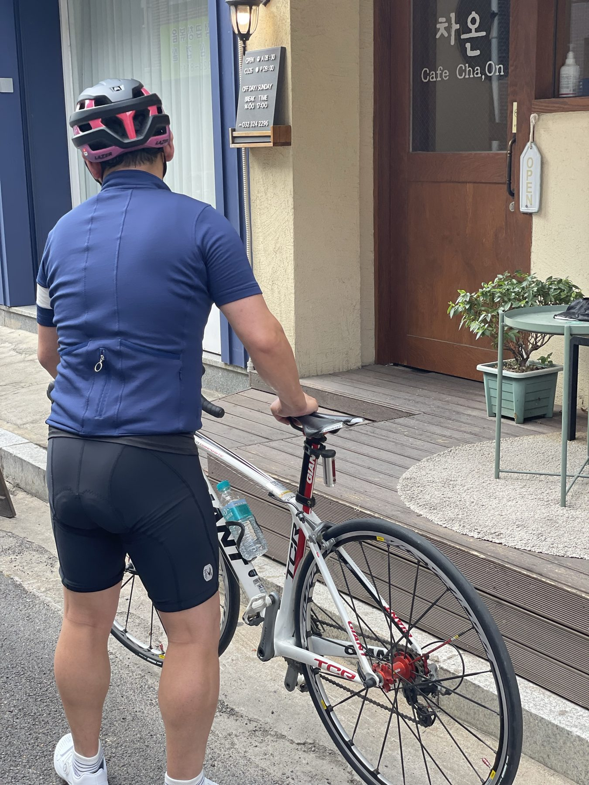
03 / 장면
길 위에서
몸이 기억한 장면.
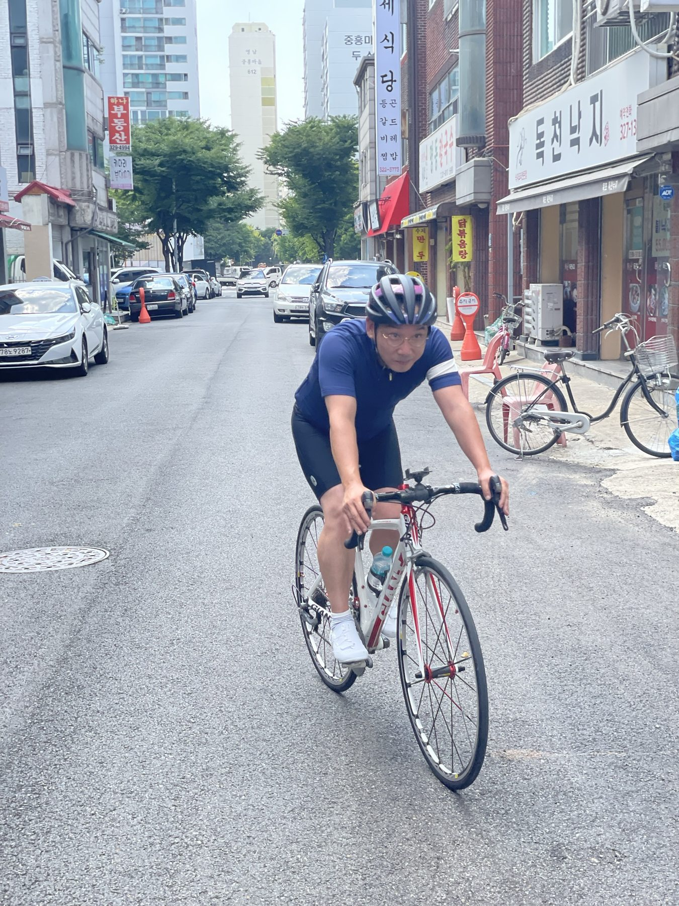
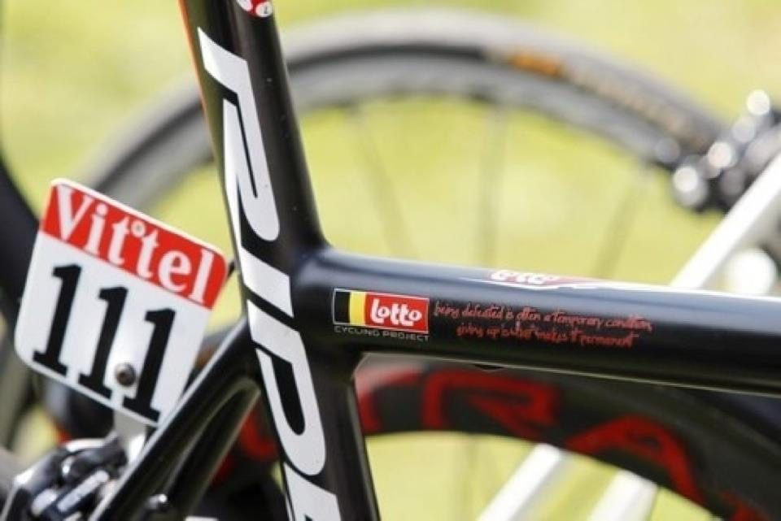
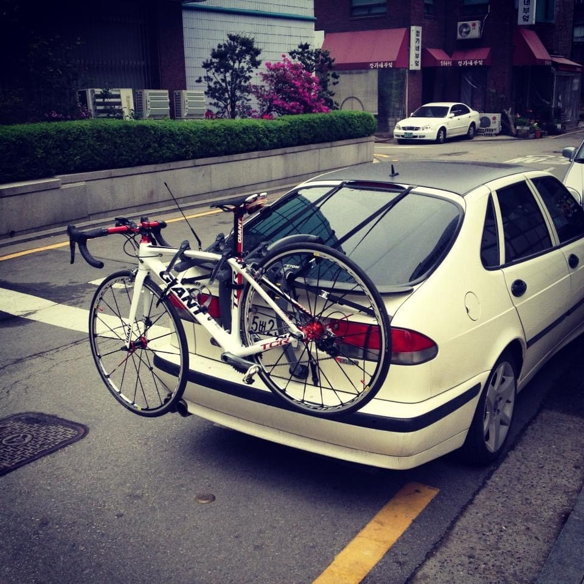
04 / 지도
완성된 코스가 아니라,
몸으로 지나온 길.
좌표로
햄PD가 몸으로 지나온 길
이 지도는 추천 코스가 아니다. 아직 장소 목록은 천천히 모으는 중이고, 지금은 몸이 먼저 기억한 길의 감각만 남겨둔다.
05 / 별 안으로
이 별 안쪽은
몸의 방향으로 열린다.
복잡한 날엔
다리를 믿고
앞으로.
06 / 마지막 기준
자전거별이
하지 않으려는 말.
장비보다 몸장비 자랑이 아니다.
정복보다 통과코스 정복이 아니다.
인증보다 기억국토종주 인증이 아니다.
홍보보다 호흡건강한 취미 홍보가 아니다.
로망보다 현실라이더의 로망이 아니다.
07 / 다른 별 보기
다른 별 보기
이 별은 HAM MEDIA Design MD 방식으로 정리한 별입니다. 좋아하는 것의 감각을 브랜드의 기준으로 바꾸는 실험이기도 합니다.
자전거별 · 문장
몸으로 남은 사람들
정렬
다리를 믿는 시간
비움 · 라이딩 · 전진
미시령을 넘어가며 내가 알고 있던 욕을 다 했다. 그리고 내려오며 천국을 맛봤다. 그렇게 추월하던 바이크를 보며 꼭 나도 바이크로 미시령을 오기로 했다.
자전거는 묘하게 정직했다. 밟은 만큼 가고, 멈추면 멈춘다. 그래서 머리가 복잡한 날엔 말보다 다리가 먼저였다.
몸이 기억한 번호
탑튜브 · 문구 · 포기하지 않기
로또팀의 리더 반덴브록의 자전거 탑튜브에는 인상적인 문구가 새겨져 있었다.
Being defeated is often a temporary condition, giving up is what makes it permanent.
패배는 단지 일시적인 것에 불과하지만, 포기해버리면 그걸로 모든 건 끝이다.
자전거별 · 장면
장면으로 남은 사람들
정렬
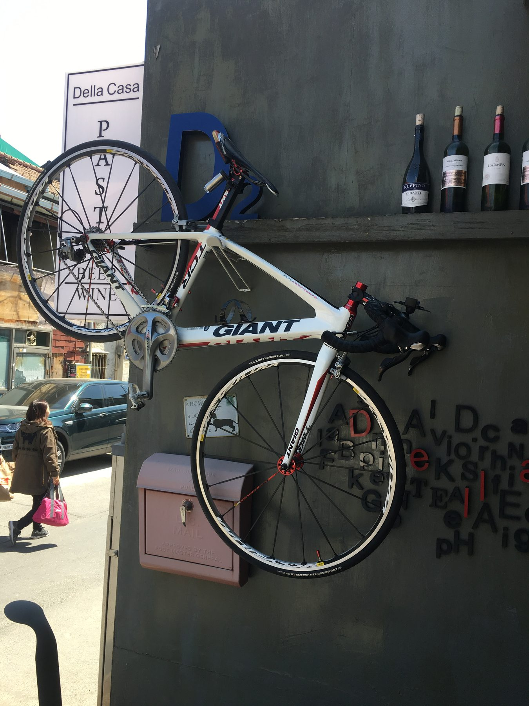
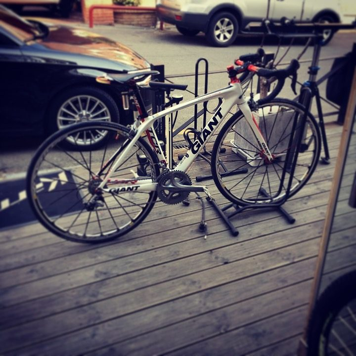
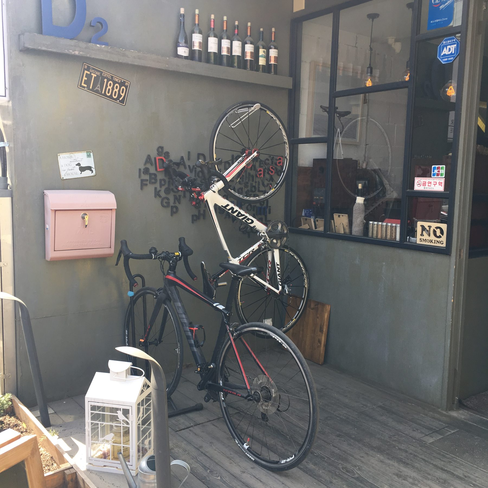
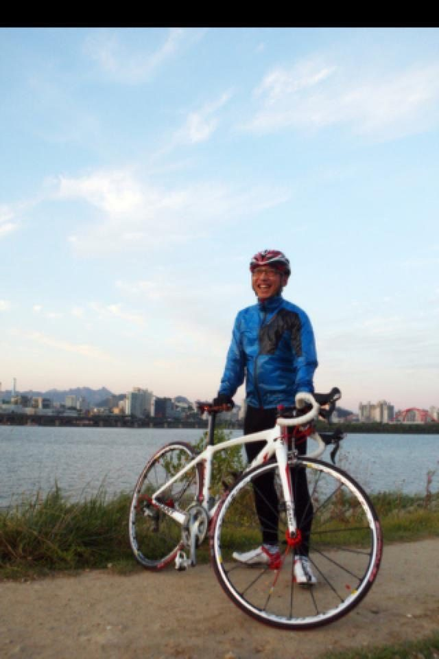
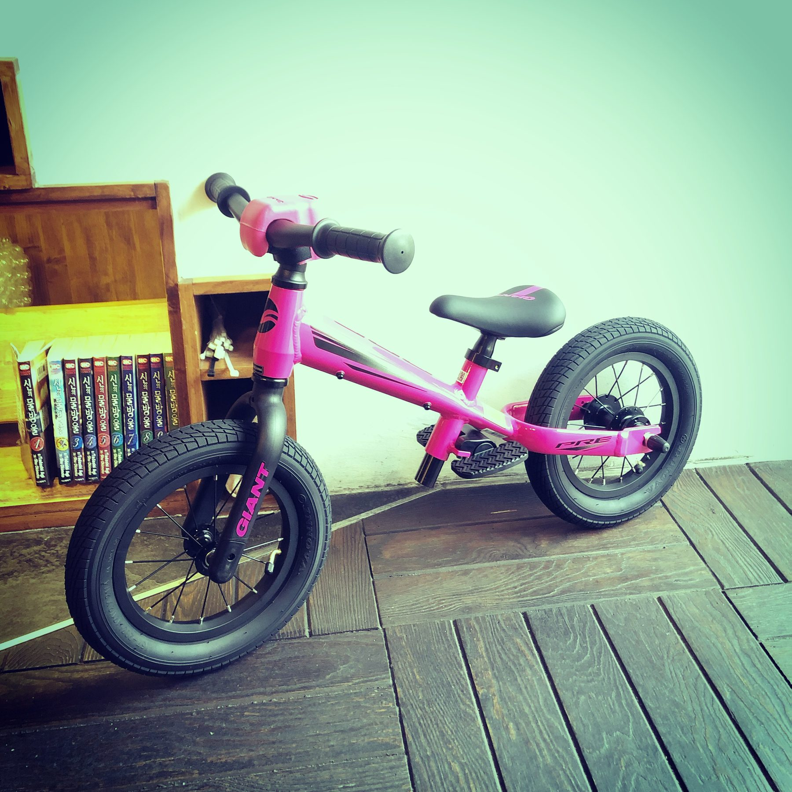
관계의 지도
길의 좌표가 쌓이면 지도가 됩니다
태그는 관계의 좌표입니다.
추천 코스가 아니라 몸이 지나온 길을 천천히 모읍니다. 미시령 외의 실제 장소 목록은 아직 확정 전입니다.